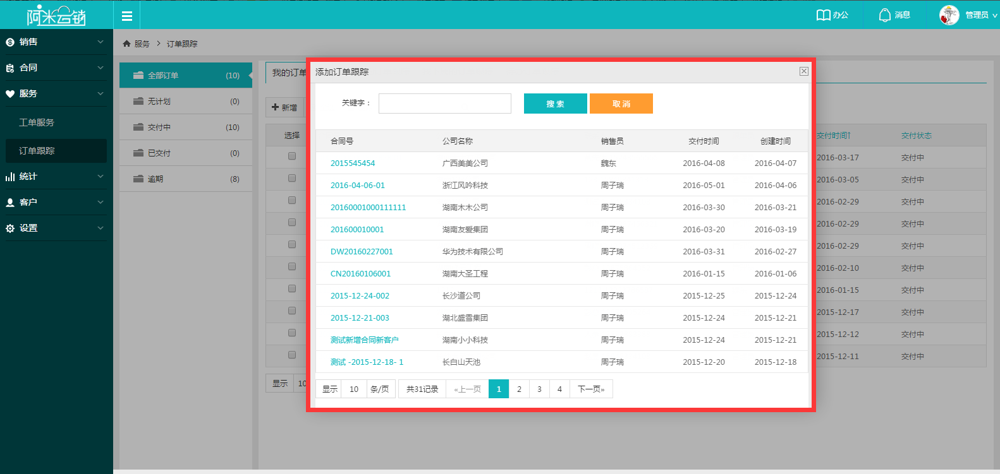
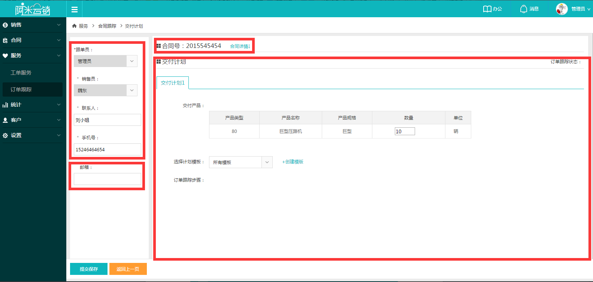
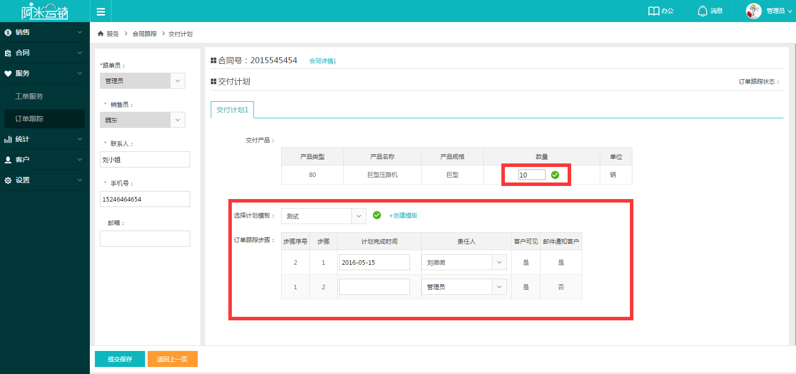

订单跟踪在合同添加后才能添加，用于让客户查询产品交付动态，像查询快递一样方便，随时了解产品交付详情，互动式服务，增加客户粘性。
1列表页点击【新增】，在弹出的合同列表选择需要添加订单跟踪的合同进入订单新增页面。
2选择合同后，可以看到合同信息、客户信息与销售员信息全部自动显示出来，点击【合同详情】可查看合同信息；
3左侧客户联系人信息的邮箱记得正确填写，订单跟踪会在每一步骤完成后发送邮件提醒给客户，此处如果不填会导致用户无法收到邮件提醒。当然，系统设置也可设置不提醒客户，稍后系统设置会详细介绍；
4客户信息确认完毕后就到了填写交付计划的时候了，当合同产品数量大于1时，可添加多个交付计划，分多次交付产品；
5选择一个计划模版（可在系统设置中配置）后，可以看到交付计划的具体步骤，选择每个步骤的责任人，计划完成时间可以直接选择，也可以不选择，由责任人自行补充，全部选择后提交，新的订单跟踪就创建完毕了。
